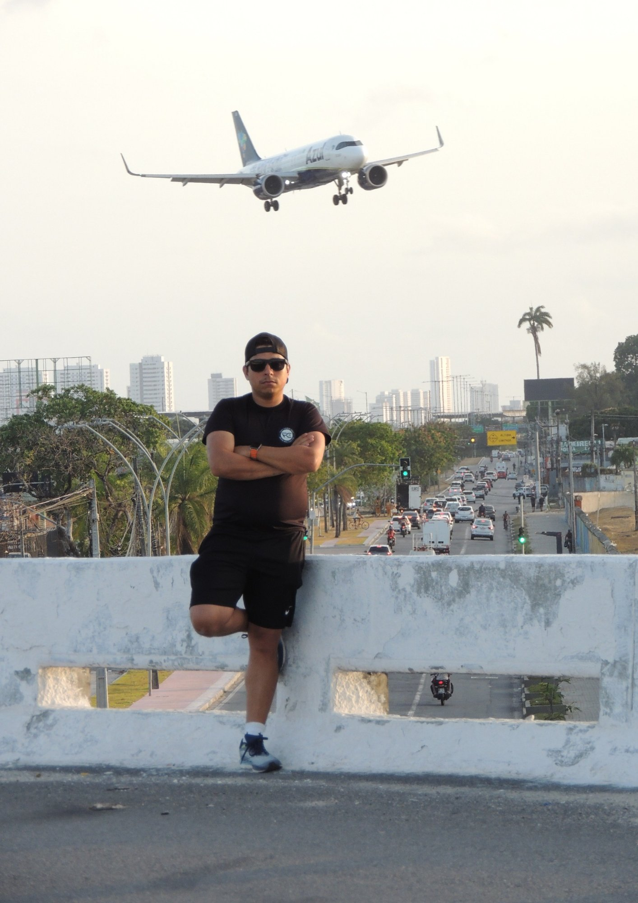

Sobre o Papa Charlie Golf
O Papa Charlie Golf (PCG) nasceu de uma paixão pela aviação e do desejo de levar a experiência de observar aeronaves a um novo patamar.
Após a pandemia, quando as transmissões ao vivo de aeroportos já conquistavam espaço em grandes centros como São Paulo e Rio de Janeiro, surgiu a ideia de trazer essa experiência também para o Nordeste, especialmente para o Aeroporto Internacional do Recife/Guararapes – Gilberto Freyre (SBRF).

Tudo começou com Paulo, apaixonado por aviação e spotter, que tinha o hábito de fotografar aeronaves e catalogar os aviões que cruzavam os céus do Recife, desde grandes companhias internacionais, como a TAP, até empresas regionais e operadores da aviação executiva, como a Abaeté Táxi Aéreo.
Juntamente com Marcelo Barros, também entusiasta da aviação e ligado ao universo da tecnologia, Paulo percebeu uma oportunidade: por que não colocar uma câmera no Aeroporto do Recife e permitir que pessoas do mundo inteiro acompanhassem, em tempo real, a movimentação de um dos principais aeroportos do Nordeste?
Foi assim que nasceu o Papa Charlie Golf.
Um novo olhar sobre a aviação no Nordeste
Desde o início, o canal chamou a atenção de apaixonados por aviação, spotters e até mesmo de veículos especializados do setor aeronáutico. O Recife passava a contar com uma transmissão ao vivo 24 horas por dia, colocando o Nordeste em evidência no cenário do live streaming aeronáutico brasileiro, ao lado de outras iniciativas pioneiras da região, como Fortaleza.
O projeto começou com uma câmera fixa, mas a evolução foi rápida. Em pouco tempo, o canal passou a contar com uma câmera 360º de alta qualidade, proporcionando imagens muito mais amplas, dinâmicas e imersivas.
Mas havia algo que tornaria o Papa Charlie Golf ainda mais especial: o áudio.
O som da aviação como você nunca ouviu!
Se as imagens impressionam, o áudio é um espetáculo à parte.
O Papa Charlie Golf investiu em uma experiência sonora diferenciada, preservando a originalidade dos motores das aeronaves, os ruídos operacionais e toda a ambiência do aeroporto.
Utilizando fones de ouvido, o espectador consegue perceber a movimentação sonora das aeronaves de maneira espacial:
- Cabeceira 18 em operação: a percepção sonora acompanha o deslocamento das aeronaves da direita para a esquerda.
- Cabeceira 36 em operação: a percepção sonora acontece da esquerda para a direita.
O resultado é uma experiência muito mais próxima da realidade, permitindo que o telespectador não apenas veja os aviões, mas também sinta a movimentação e a atmosfera de um aeroporto em pleno funcionamento.
O PCG investiu nesse conceito de áudio espacial como um dos seus grandes diferenciais, tornando a experiência de acompanhar uma transmissão aeronáutica muito mais realista e envolvente.
Tecnologia por trás das câmeras
Para entregar uma transmissão estável, contínua e com qualidade, o Papa Charlie Golf conta com uma estrutura tecnológica dedicada.
Atualmente, o sistema é dividido em equipamentos e estações independentes:
- Servidor dedicado: responsável exclusivamente pelas transmissões ao vivo.
- Estação de áudio: dedicada à captação da fonia aeronáutica e da ambiência do aeroporto.
- Estação de automações: responsável pelos sistemas auxiliares, integrações e recursos inteligentes.
- Rastreamento de aeronaves: desde outubro de 2026, o canal passou a integrar recursos de rastreamento automático conectados aos transponders das aeronaves, ampliando as informações disponíveis durante as transmissões.
Tudo isso é pensado para oferecer ao público uma experiência cada vez mais completa, combinando imagens, áudio, informações operacionais e tecnologia.
O futuro está em constante evolução
O Papa Charlie Golf não é apenas um canal de transmissões ao vivo. É um projeto em constante desenvolvimento, movido pela paixão pela aviação e pela busca permanente por inovação.
Estamos trabalhando continuamente para incorporar novos ângulos de câmera, aprimorar os sistemas de áudio, ampliar os recursos de rastreamento e implementar novas tecnologias que tornem cada transmissão ainda mais imersiva.
Nosso objetivo é simples: aproximar pessoas da aviação, conectar apaixonados pelo mundo inteiro e mostrar que, mesmo a milhares de quilômetros de distância, é possível sentir a emoção de estar ao lado de uma pista de aeroporto.